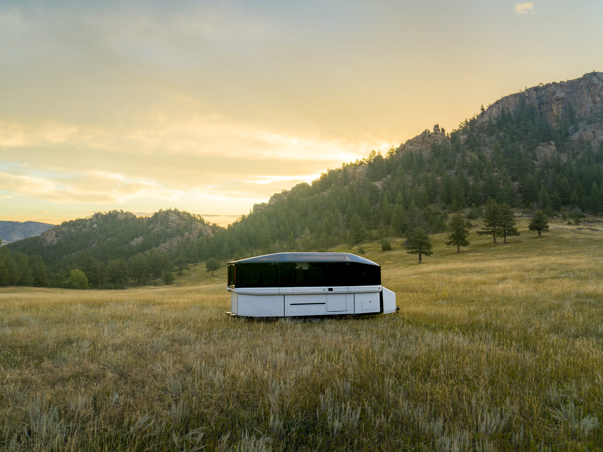
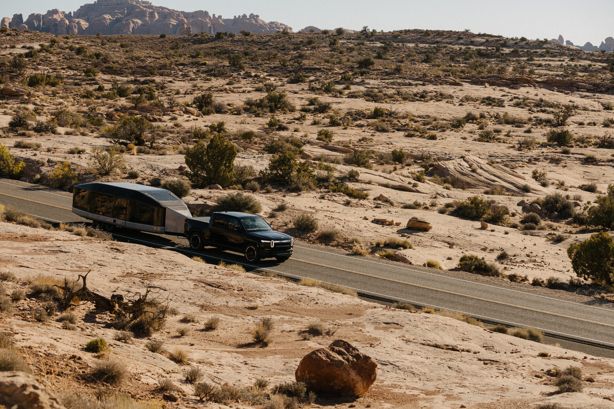

The standard argument against towing with an electric vehicle has always been the same one, and it has always been basically correct. Throw a big trailer behind an EV and the range estimate on your dashboard becomes a negotiation rather than a plan. Efficiency drops sharply, charging stops multiply, and what should be a weekend escape turns into a logistics exercise. For a long time, that was just the honest state of things. EVs were excellent at almost everything except the one scenario that defined how a lot of Americans actually use a truck.
The Lightship AE1 is a direct challenge to that framing. Not because it ignores the physics of towing heavy objects down the highway, but because it accepts them and then builds a motor to compensate. And when you pair it with a Rivian, what Out of Spec Reviews demonstrated across a series of real-world tests this spring is something worth paying attention to: the first all-electric glamping setup that does not ask you to make peace with a significant compromise.

The Lightship AE1 in road mode at roughly 6 feet 11 inches tall. The low profile is not only aerodynamic. It reduces trailer sway by cutting both frontal area and exposure to side drafts. Image: Lightship
What the Lightship Actually Is
Lightship is a Colorado startup building what it calls an aero electric travel trailer. The AE1 collapses from camp mode, where it stands about 10 feet tall with full living height, down to a low aerodynamic road profile of just under 7 feet for towing. The collapse is not a marketing trick. A lower roofline reduces the frontal area the tow vehicle is pushing down the road at speed, and that matters more than the trailer's weight when it comes to efficiency on the highway.
Under the frame rails sits a 77 kWh battery pack, 69.2 kWh of it usable, with cells from a supplier Lightship uses across the platform. Built into the rear axle is a permanent magnet motor in a 3-in-1 drive unit capable of up to 80 kW of output. Lightship calls the system Trek Drive. The physics are elegant: two force sensors inside the hitch coupler measure the actual drag the trailer is placing on the tow vehicle in real time, and the motor applies exactly enough power to neutralize it. Above roughly 15 miles an hour, the trailer stops being a burden and starts being a contributor. Trek Drive cuts off at 70 miles an hour, which is roughly where most people are towing anyway.
The force sensor approach matters for one important reason. It does not require any communication between the trailer and the tow vehicle's own electronics. It is completely agnostic to what is pulling it. The trailer is measuring physics, not talking to an OEM. That is why it works with a Rivian, a diesel pickup, or a Cybertruck without a bespoke integration agreement with any of them.
What the Rivian Brings
Rivian's Gen 2 R1S is rated at 7,700 lbs across every battery and drivetrain configuration, per Rivian's published specifications. The Lightship AE1 sits just over 7,000 lbs dry, which means a trailer loaded with water and camping gear pushes right up against the ceiling of what the R1S can legally tow. The R1T with a Max battery pack tells a different story: Rivian rates Max-battery R1T configurations at 11,000 lbs, giving it far more margin for the Lightship at any load. Both vehicles require a weight distributing hitch to achieve maximum towing capacity per Rivian's specs. For buyers considering this pairing seriously, the R1T Max is the more comfortable fit on paper. The R1S works, and the tests confirm it handles the trailer, but the margin is tighter.
What both Rivians bring beyond the tow rating is a large onboard battery. Combined with the trailer's 69.2 kWh, the pairing carries something in the neighborhood of 200 kWh between the two vehicles. That is a significant pool of energy to work with on a road trip. The key dynamic is that Trek Drive draws from the trailer's own pack while compensating for drag, meaning the Rivian's battery is preserved far more than it would be towing a conventional trailer of similar weight.
Tow mirrors are worth adding for something 8.5 feet wide, which is as wide as DOT permits for a road-legal trailer. The Cybertruck's wide-set mirrors handle the Lightship without additional hardware. Rivians benefit from aftermarket tow mirrors on a trailer this size.
The Efficiency Data
Out of Spec Reviews tested this over a 71-mile run with a Rivian R1S, on roads between 55 and 65 miles an hour with a stretch of highway at 70, Trek Drive running the entire way. The Rivian used 30 kWh and arrived with 13% of its battery remaining. The Lightship's own pack came in at 70% remaining. Neither vehicle was in any danger.
At highway speeds with Trek Drive active, the R1S was returning above 2.4 miles per kilowatt hour while pulling a nearly 8,000-pound trailer. For context, those numbers are in the range of what you would expect from the same vehicle on the same roads without a trailer behind it. The table below compares the three scenarios tested across multiple runs:
| Condition | Consumption |
|---|---|
| Cybertruck solo, no trailer | ~430 Wh/mi |
| Lightship towed, Trek Drive off | ~786 Wh/mi |
| Lightship towed, Trek Drive on | ~418 Wh/mi |
The third number is not a rounding error. Trek Drive, running in what the tests suggested was an aggressive tune with the Cybertruck, essentially eliminated the trailer's drag contribution to the tow vehicle's consumption. The trailer was burning its own battery to offset what it was costing the truck to pull it. The R1S runs were conducted at slightly lower speeds and the conditions were not identical, but the directional result across both tow vehicles was the same: Trek Drive gets you close to your unloaded efficiency numbers.
The Glamping Case
Here is where the two products stop being technically interesting and start being genuinely compelling as a lifestyle pairing. The Lightship AE1 is not a camping trailer in the traditional sense. When the top hat rises into camp mode, it becomes a very well built small apartment on wheels. Inside you have a two-burner induction cooktop, a combination microwave and convection oven that Out of Spec's Kyle Conner used to cook sweet potatoes in under five minutes and bake bread with his family, and a refrigerator with a freezer side large enough to stock for several days. Counter space is generous. Fresh water capacity runs to 60 gallons total between the main tank and the hot water heater tank. Gray water holding capacity is 35 gallons. Black water is 30 gallons. The entire roof is covered in solar panels, including curved sections that follow the structural hoops.

The Lightship AE1 in road mode behind a Rivian. Trek Drive activates above approximately 15 mph and runs up to 70 mph, neutralizing trailer drag through force sensors in the hitch coupler. Image: Lightship
Auto-leveling deploys from the onboard tablet, called the Atlas, and takes roughly a minute on most surfaces. The windows are gas-strut panels rather than RV sliders, so when you are cooking dinner you can pop the glass open, watch the sunset, and pull a screen down when the bugs arrive. The HVAC is an automotive-grade heat pump integrated into the nose of the trailer, not a rooftop unit. It manages cabin climate and battery thermal management from the same system. The whole interior is treated acoustically more like a vehicle cabin than a camping box.
The vehicle is warranted for three years bumper-to-bumper and five years on the battery and drivetrain. The RV industry's typical baseline is one year. That coverage gap is worth noting when you are evaluating a premium product from an early-stage company.
When you drive a Rivian to a campsite and open this thing up in a meadow, you are not roughing it with amenities bolted on. You are bringing a version of home into the kind of place home cannot go. And you drove there on electricity the whole way.
What Does Not Work Yet
DC fast charging for the Lightship is not available on current production units. It is coming through an over-the-air software update and Lightship says it is actively in development. For now, recharging the trailer's battery means a campground hookup or an AC outlet. On a multi-day trip where you are staying put for a night or two, that is not a meaningful constraint. Most campgrounds with any electrical infrastructure offer at least a 30-amp or 50-amp hookup, and a full overnight charge restores the pack.
Solar does not currently route energy into the high-voltage battery on production units. It keeps the low-voltage systems alive. That will also come through software. Regenerative charging through the motor while driving is in development. These are real gaps in the current feature set, and Lightship's co-founder Ben has been clear about them publicly. The company's position is that it prioritized production reliability and ramping unit output over holding back delivery until every feature was live. Whether you find that reassuring or not depends on your risk tolerance for early-production hardware.
The fit and finish on early units has been inconsistent in areas. Door seals, panel alignment, and water system behavior have all surfaced as minor issues in real-world testing. Lightship's service model guarantees under one hour first response and under 24 hours to a recovery plan, with on-site service for most mechanical issues. The company is currently building somewhere between five and eight units per month in their Broomfield, Colorado factory, working toward a capacity of roughly 500 per year. It is a small company delivering a complicated first product. That context belongs in any honest evaluation.
The Honest Number
The Lightship AE1 Atmos starts at around $184,000. Entry-level Panos trims begin at approximately $150,000. Trek Drive, which is the system that makes the Rivian pairing actually work as described, pushes the price above $170,000 depending on configuration. Add the Rivian and you are looking at a combined purchase that requires both a serious commitment to electric transportation and a serious camping habit to justify. That is a real filter on who this is for in 2026.
What the pricing does not change is what the technology proves is possible. A trailer that carries its own battery and motor and uses force sensors to eliminate its own drag on the tow vehicle is not a prototype concept anymore. It exists. It is in production in Colorado with over 80% domestic supply chain value by Lightship's own count. It has been driven 71 miles with a Rivian starting at a low state of charge and arrived at the destination with both vehicles comfortable. At highway speeds with Trek Drive running, the Rivian's range estimate adjusted to reflect a trailer the system calculated weighed about 2,000 lbs. The trailer weighs nearly four times that.
The Bottom Line
Glamping has always had everything except the right powertrain story. The accommodations got excellent. The locations got ambitious. The setup got easier. The drive to get there, if you drove a truck and watched your fuel gauge and your diesel receipts, remained the practical compromise at the center of the whole idea.
Rivian and the Lightship are solving that from opposite ends. Rivian built a truck most people would choose even without a trailer attached. Lightship built a trailer with enough battery and motor to stop being a drag on whatever is pulling it. Put them together and you get the first version of all-electric glamping that does not require anyone to make excuses for their gear.
That version is expensive and early and still has a few rough edges. It is also the most interesting thing happening in the camping space right now, and the hardware gap that kept this as a concept rather than a reality has been substantially closed.